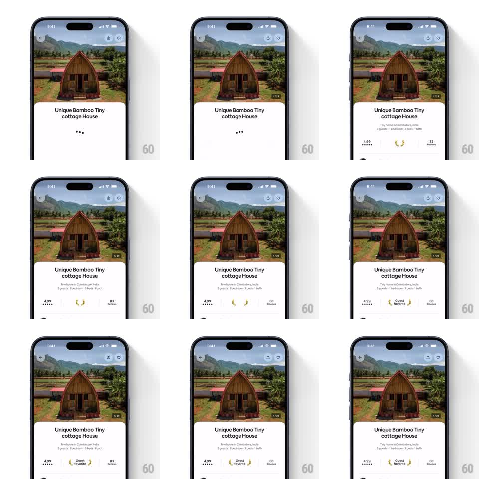

Media
Frame-by-frame

Rebuild this interaction 1:1: Airbnb's "Guest favorite" badge entry on a listing page - after the title block loads, the rating row assembles piece by piece: stars fade in, two laurel branches scale up in a stagger, and the "Guest favorite" label fades in between them.

Rebuild this interaction 1:1: Airbnb's "Guest favorite" badge entry on a listing page - after the title block loads, the rating row assembles piece by piece: stars fade in, two laurel branches scale up in a stagger, and the "Guest favorite" label fades in between them. ## Integration Integration: stack-agnostic spec - springs given as stiffness/damping, timed motions as duration + curve; map every value to your framework and animation library of choice. ## Scene Mobile listing page: hero photo, listing title, then a stats row with three groups - "4.99" + 5 stars, a laurel badge with "Guest favorite", "83 Reviews". Initially the title sits over three pulsing placeholder dots. ## Motion spec Pattern: choreographed entrance on content load. - Placeholder: three dots pulse in sequence (~800ms loop) while content loads. - Stats row fades up as a block (opacity 0 -> 1, translateY 8px -> 0, 300ms, ease-out). - Laurels: left branch scales 0 -> 1 from its inner anchor (spring ~260/18, ~350ms), right branch follows 90ms later, mirrored. - "Guest favorite" label fades in between the laurels (150ms, after both branches land). - Rating number + stars and review count fade in with the same timing as the block, no extra fanfare. ## Calibration - The laurels are the moment - their stagger (90ms) and spring softness carry the "award" feeling. - Everything else is a quiet fade; the badge gets the only spring. ## Reduced motion Row fades in complete (200ms), no laurel scale, no stagger. ## Don't miss - Laurels scale from their inner tips (near the label), not their centers. - The loading dots are vertically centered where the stats row will land - no layout jump on arrival.